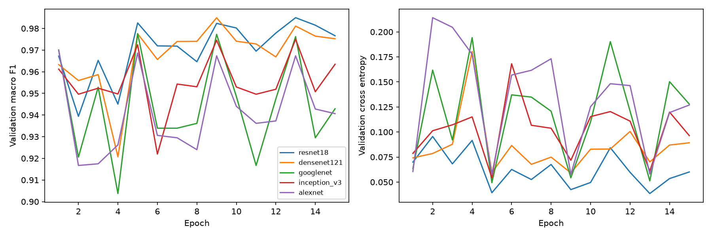
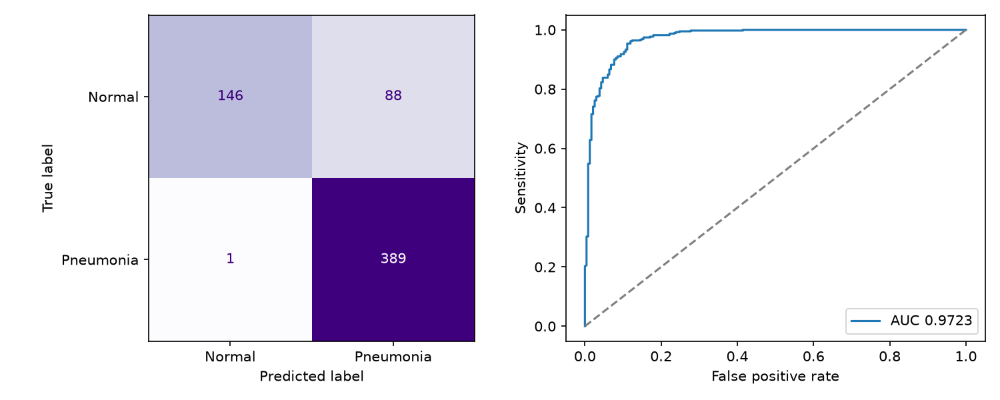

All five CNNs restarted from ImageNet and completed 15 epochs. Checkpoints were selected by validation macro F1, not by the test set. Learned weights and saved probabilities passed independent reload verification.
| Run | Accuracy | Precision | Recall | Specificity | Macro F1 | AUC |
|---|---|---|---|---|---|---|
| Paper Table 2 | 96.39% | 93.28% | 99.62% | — | — | 99.34% |
| Original 5 epochs | 87.18% | 83.12% | 99.74% | 66.24% | 85.08% | 98.15% |
| Restart 15 epochs, validation selected | 85.74% | 81.55% | 99.74% | 62.39% | 83.19% | 97.23% |
Published numbers are reported claims. The paper's precision, recall and accuracy do not reconcile to one confusion matrix on its stated 624 images; averages or an undocumented evaluation definition could explain this. This is not proof of fabrication.
The old run used five epochs, two cached views, batch eight, the general LR schedule for AlexNet and no independent checkpoint-selection set. The restart uses deduplicated group-separated training/validation, batch sixteen, four cyclic views including explicitly assumed Gaussian noise, AlexNet's stated high-then-low step schedule and validation-selected checkpoints. These changes are bundled: a gain cannot be assigned to epochs alone.
Table 2 reports 200 epochs for ResNet18/AlexNet, 100 for DenseNet121/InceptionV3 and 50 for GoogLeNet. AlexNet prose says 200 iterations before lowering LR; the relationship to its table epoch count is ambiguous. Fifteen local epochs is still a truncated reproduction.
| Epoch checkpoint | Validation macro F1 | Validation AUC | Validation specificity |
|---|---|---|---|
| 5 | 0.9838 | 0.9994 | 97.78% |
| 10 | 0.9731 | 0.9991 | 99.63% |
| 15 | 0.9755 | 0.9992 | 99.63% |
Selected epochs: {'resnet18': 13, 'densenet121': 9, 'googlenet': 5, 'inception_v3': 13, 'alexnet': 1}. Do not assume the final epoch is best. Test scores were not used to choose these epochs.
No exact source hash or recoverable filename group crosses training/validation. The strict perceptual screen found no near-duplicate candidate across train/validation or non-test/test; this does not prove patient independence. On 16 balanced non-test images per model, float16 conversion changed no decisions and probabilities by at most 0.000055. It is unlikely to explain a ten-point gap by itself.
Training prevalence is about 74.2% pneumonia versus 62.5% in test. High AUC with poor normal recall suggests operating-point and generalization issues, but neither prevalence nor these audits establishes a single causal explanation. The original benchmark test was previously inspected and is not a blind external holdout. Frozen caches, fixed augmentation, seed choice, normalization, classifier details and DenseNet norm5 remain assumptions; author code was not verified.


The M3 proposal now combines lung cropping and a pretrained small ViT, with four matched comparisons to isolate each effect. Neither improvement has run. JEPA and mixup remain optional future work. No clinical or state-of-the-art claim is made.